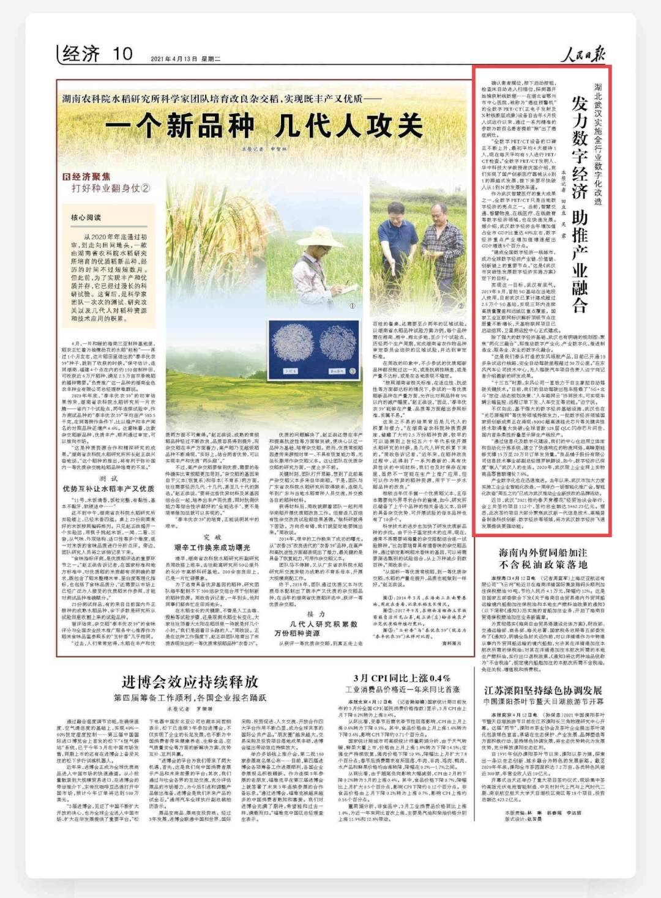

人民日报关注武汉数字经济：实施全行业数字化改造
湖北武汉实施全行业数字化改造
发力数字经济 助推产业融合
本报记者 田豆豆 吴 君
《人民日报》（2021年4月13日第10版）
确认患者摆位，按下启动按钮，检查床自动进入扫描位，探测器开始捕获射线数据……在湖北省鄂州市中心医院，被称为“癌症预警机”的全数字PET/CT（正电子发射及X射线断层成像）设备自去年6月投入试运行以来，通过一系列精准的参数为数百名患者提前“揪”出了癌症病灶。
“全数字PET/CT设备的口碑正不断上升，最初平均4天接待1人，现在每天平均有5人进行PET/CT检查。”全数字PET/CT发明人、华中科技大学教授谢庆国介绍，我们实现了国产创新医疗器械从0到1的跨越式发展，接下来要尽快驶入从1到N的发展快车道。
作为武汉智慧医疗的重大成果之一，全数字PET/CT只是当地数字经济的亮点之一。当前，智慧交通、智慧物流、在线医疗、在线教育等数字经济领域，也在快速发展。据介绍，武汉数字经济去年增加值占全市GDP比重达40%左右，数字经济重点产业增加值增速超出GDP增速8个百分点。
“建成全国数字经济一线城市，成为全球数字经济产业链、价值链、创新链上的重要节点。”这是《武汉市突破性发展数字经济实施方案》定下的目标。
实现这一目标，武汉有底气。2019年8月，首批5G基站在当地投入使用，目前武汉已累计建成超过2.5万个5G基站，实现三环内连续高质量覆盖和远城区重点覆盖。国家工业互联网标识解析顶级节点注册量不断增长，天基物联网项目已启动组网，卫星测运控中心正式建成。
除了强大的数字经济基础，武汉也有明确的规划图：聚焦“两化三融合”，即推动数字产业化、产业数字化，推进制造业、服务业、农业的数字化融合。
“这是我们牵头打造的东风领航产品，目前已开通10多条试运行线路，安全自动驾驶里程超过30万公里。”在东风汽车公司技术中心，无人驾驶汽车项目负责人边宁向记者介绍最新的研发成果。
“十三五”时期，东风公司一直致力于自主掌控自动驾驶关键技术。“目前，我们的自动驾驶出租车搭载了‘5G+北斗’定位、动态规划决策、‘人车路网云’协同技术，可实现车辆云端监控、远程订单下发、人车交互等功能。”边宁说。
不仅如此，基于强大的数字经济基础设施，武汉也在“光芯屏端网”等优势领域持续发力，一批数字经济领域国家级创新成果正在涌现：800G超高速硅光芯片等关键共性技术取得重大突破；全球首款128层QLC闪存芯片问世、国内首条柔性折叠显示屏生产线投产。
“通过信息化及数字化建设，我们的中心仓启用立体库和自动化分拣系统，建立了快速响应的物流网络，高峰期能够支撑15万至20万日订单发货量。”良品铺子股份有限公司信息技术事业部副总经理罗轶群说，如今，数字经济已深度“嵌入”武汉人的生活。2020年，武汉限上企业网上实物商品零售额增长7.6%。
产业数字化也在迅速推进。去年以来，武汉市加大力度实施工业企业智能化改造，一周举办一场智能化推广会，智能化改造“周五之约”已成为武汉推动企业新技改的品牌活动。
近日，武汉“2021相约春天赏樱花”经贸洽谈会举行，会上共签约项目112个，签约总金额达3462.23亿元。据悉，此次签约项目大部分聚焦武汉新一代信息技术、高端装备制造科技创新、数字经济等领域，将为武汉数字经济飞速发展提供更强动能。